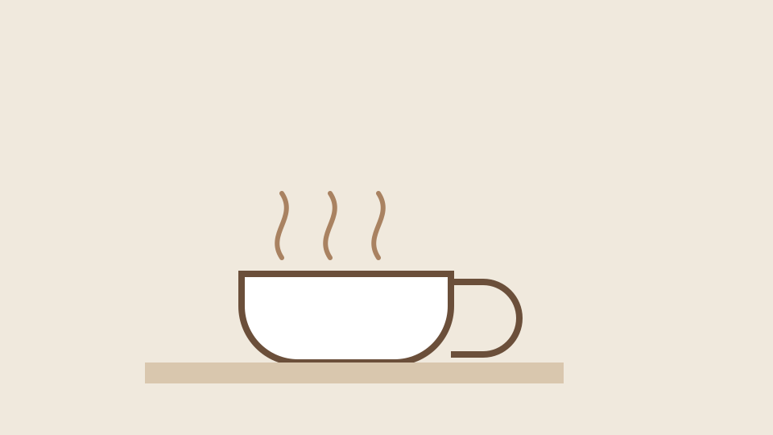

О нас
«Зерно» — небольшая кофейня на тихой улице. Мы сами выбираем зерно и обжариваем его порциями раз в неделю.
Как мы работаем
Утром ставим воду, включаем музыку и ждём первых гостей. Если вы любите кофе без спешки — это место для вас.
